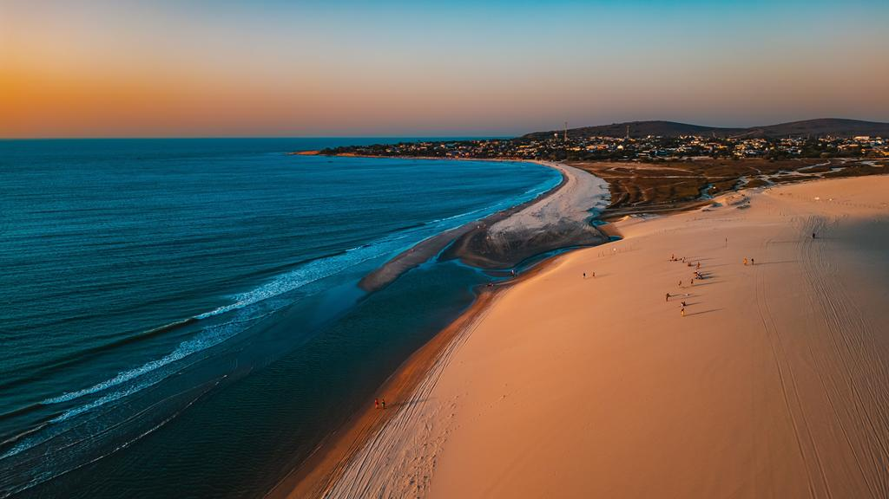
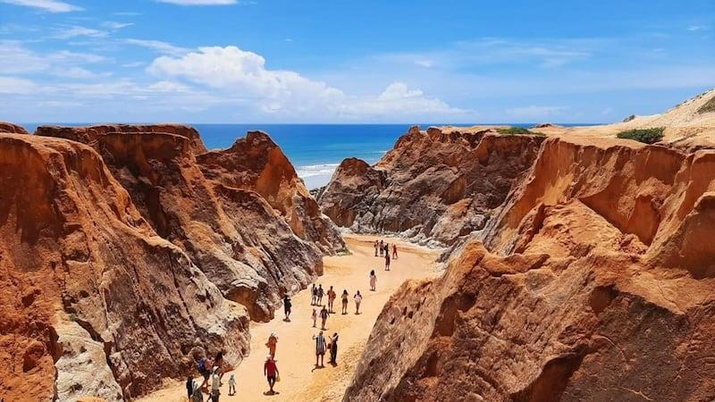
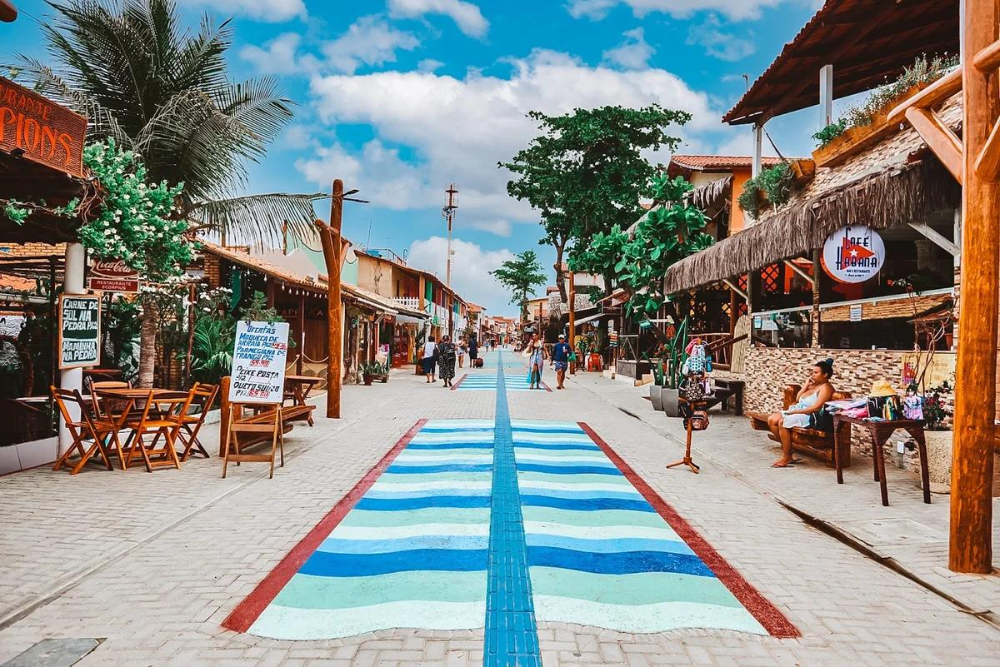
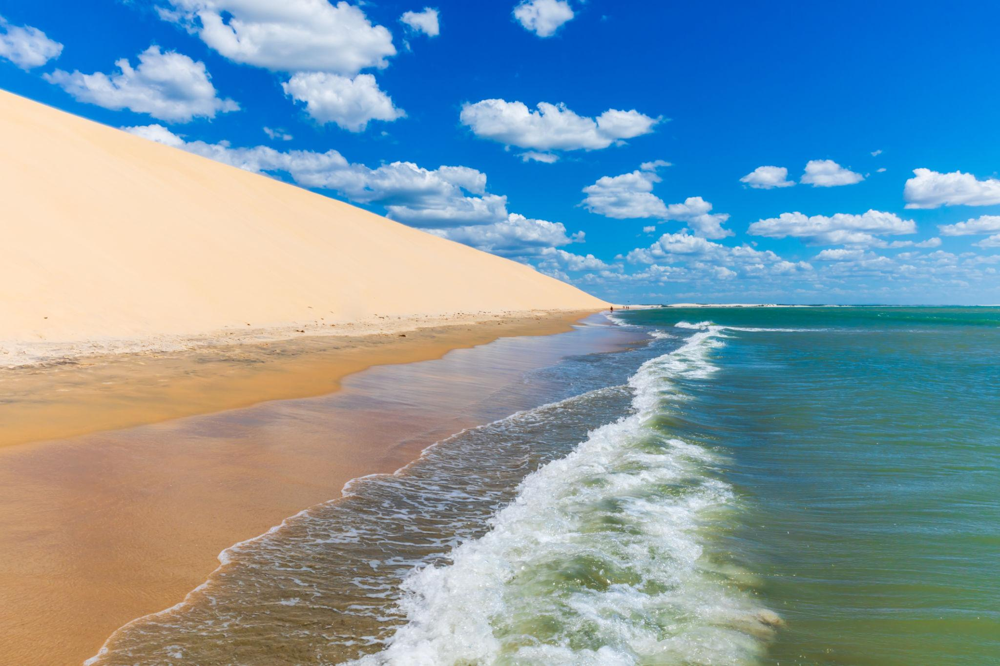

O Ceará é um estado localizado no Nordeste do Brasil, conhecido por suas belas praias, dunas e paisagens naturais. Sua capital, Fortaleza, é famosa pela vida cultural e pelas praias encantadoras. Destinos como Jericoacoara, Canoa Quebrada e Morro Branco atraem turistas de todo o mundo. O estado também se destaca pela culinária típica, pelo forró, pelo artesanato e pela hospitalidade de seu povo, oferecendo experiências inesquecíveis aos visitantes.


formações de areia, proporcionando paisagens únicas.

lojas, música e vida noturna, sendo ótima para passear à noite.

inesquecível, sendo perfeita para relaxar e aproveitar a natureza.